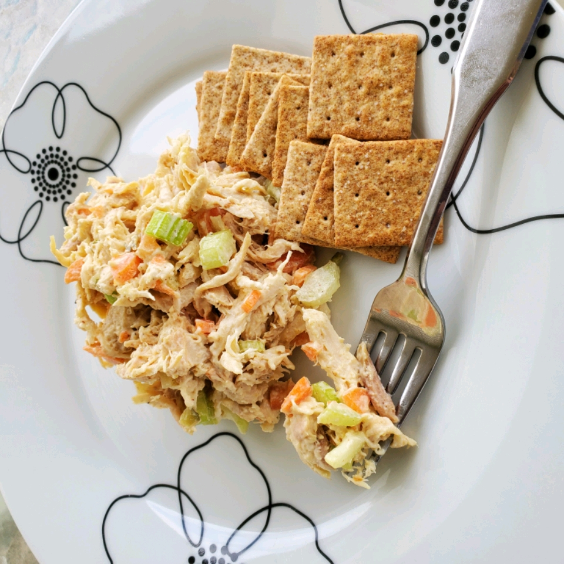

Shredded Chicken Salad

Description
A wonderfully delicious shredded chicken salad perfect for sandwiches, salads, and crackers! This is one of those things that gets more delicious the more it sits chilling.
Ingrediants
- 4 cups shredded cooked chicken
- 4 stalks celery, minced
- 2 large carrots, peeled and minced
- 1 cup mayonnaise
- ¼ cup sweet relish
- ¾ teaspoon salt
- ½ teaspoon ground black pepper
Directions
Step 1
Mix chicken, celery, carrots, mayonnaise, relish, mustard, lemon juice, salt, and pepper in a bowl until well combined. Place in the refrigerator to chill for at least 1 hour before serving.